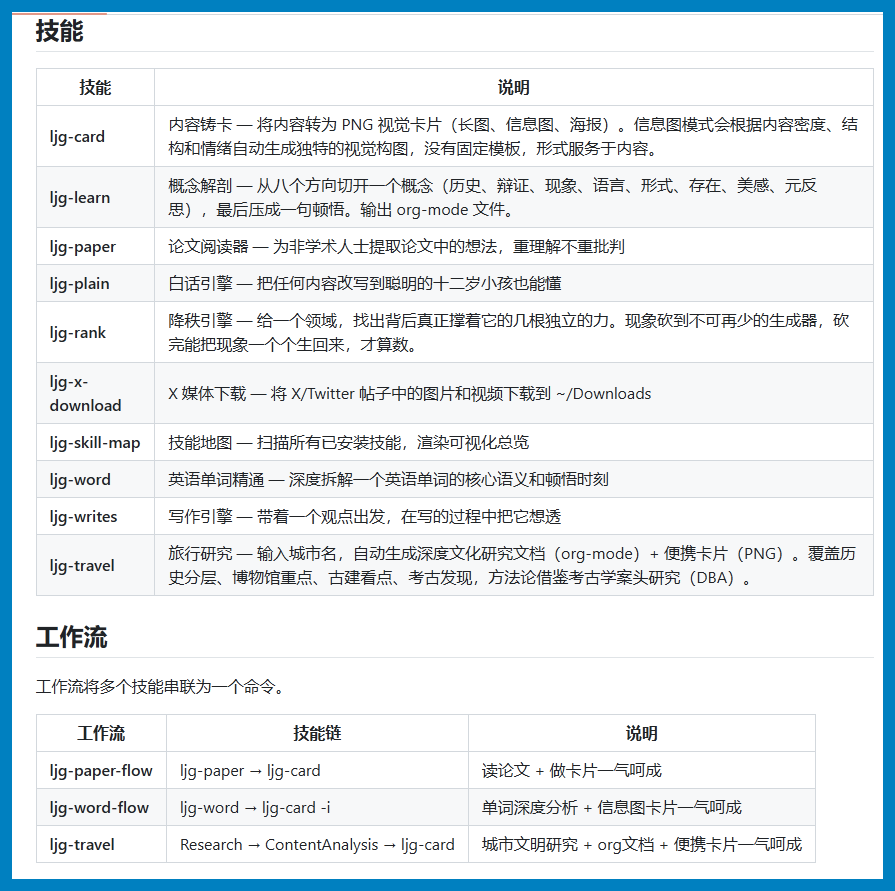
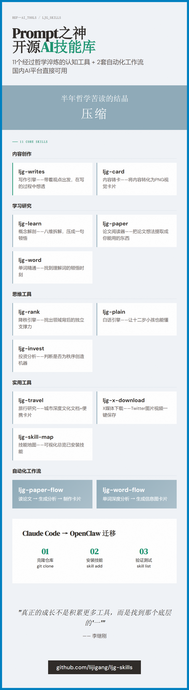
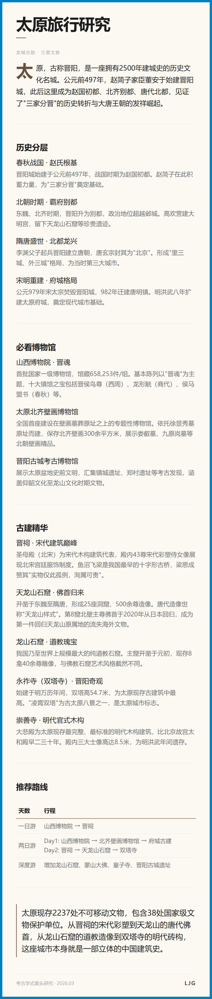

那个写出"汉语新解"的Prompt之神，把压箱底的技能全放出来了。
去年，李继刚用一句"汉语新解"让中文互联网见识了什么是顶级Prompt 工程。
今年，他把个人技能库 ljg-skills 完全开源 —— 不是几个 Prompt 模板，而是 11 个经过哲学淬炼的认知工具，外加 2 套自动化工作流。
更重要的是：这套原本为 Claude Code 设计的技能，完全可以迁移到国内支持 Skill 系统的 AI 平台（如OpenClaw、Antigravity 等）。
01 那个"消失"的半年，他去干了什么
去年 8 月到 11 月，李继刚写出了数百个流传于各大社区的 Prompt。然后元旦一过，他突然消失了。
圈内人都在问：李继刚去哪了？
半年后，他带着全新的作品回归，风格完全变了。
从"公文笔杆子"那种几百字的复杂 Prompt，变成了极简的 Lisp 表达式。从追求"炫技"到追求"压缩"。
他说："我拿着同样的杯子，接雪碧、接可乐，接各种各样的水，一直在接喝接喝，饮料变了，但是装饮料的杯子没变啊。"
这半年，他去读哲学了。东方哲学、西方哲学，一本一本地啃。
最后读出了两个字：压缩。
用一本书的厚度讲一个词，用一个 Prompt 封装一套方法论。
这就是 ljg-skills 的底层逻辑。
02 这11个技能，每个都是一把认知手术刀
李继刚的 GitHub 仓库里，没有花里胡哨的功能，只有 11 个经过反复打磨的核心技能：
内容创作类
ljg-writes（写作引擎）带着一个观点出发，在写的过程中把它想透。不是帮你写，而是帮你想清楚。
ljg-card（内容铸卡）将内容转化为 PNG 视觉卡片。没有固定模板，形式完全服务于内容 —— 长图、信息图、海报，根据内容密度和情绪自动生成独特构图。
学习研究类
ljg-learn（概念解剖）从八个方向切开一个概念：历史、辩证、现象、语言、形式、存在、美感、元反思。最后压成一句顿悟。输出 org-mode 格式，适合深度知识管理。

ljg-paper（论文阅读器）为非学术人士设计。不追求批判，只追求理解 —— 把论文里的想法提取出来，变成你能用的东西。
ljg-word（英语单词精通）深度拆解一个单词的核心语义，找到那个"顿悟时刻"。不是背单词，是理解词。
思维工具类
ljg-rank（降秩引擎）给一个领域，找出背后真正撑着它的几根独立的力。把十几个现象砍到不可再少，砍完能把现象一个个生回来，才算数。
ljg-plain（白话引擎）把任何内容改写到聪明的十二岁小孩也能懂。信息不损失，理解门槛归零。
ljg-invest（投资分析）核心判断：这个项目是不是一台"秩序创造机器"？从六个维度拆解投资标的。
实用工具类
ljg-travel（旅行研究）输入城市名，自动生成深度文化研究文档 + 便携卡片。覆盖历史分层、博物馆重点、古建看点、考古发现，方法论借鉴考古学案头研究（DBA）。
ljg-x-download（X 媒体下载）将 X/Twitter 帖子中的图片和视频下载到本地。简单，但有用。
ljg-skill-map（技能地图）扫描所有已安装技能，渲染可视化总览。管理技能的工具。
03 工作流：把技能串成流水线
除了单个技能，李继刚还设计了 2 套工作流 —— 把多个技能串联，一键完成复杂任务：
ljg-paper-flow（论文流）读论文 → 生成分析 → 制作卡片，一气呵成。
ljg-word-flow（单词流）单词深度分析 → 生成信息图卡片，一气呵成。
核心逻辑：不是单个功能的堆砌，而是认知流程的封装。
04 如何在国内AI平台使用这些技能
这是本文的重点。
ljg-skills 原本为 Claude Code 设计，但其底层格式 —— SKILL.md —— 已经成为 AI 技能系统的行业标准。国内支持 Skill 的平台（如 OpenClaw、Antigravity、Cursor 等）都可以直接适配。
4.1 Skill 文件格式解析
一个标准的 Skill 文件（SKILL.md）包含三个部分：
---
name: skill-name
description: |
技能的用途描述。
触发词：关键词1、关键词2。
---
# 技能名称
## 创作哲学（或核心逻辑）
...
## 工作流
...
## 使用示例
...
关键字段说明：
- name：
技能标识符，小写字母+连字符 - description：
描述技能用途，可包含触发词说明 - 正文：
Markdown 格式，包含工作流、约束条件、示例等
4.2 Claude Code → OpenClaw 迁移指南
步骤一：获取 Skill 文件
# 克隆李继刚的技能库
git clone https://github.com/lijigang/ljg-skills.git
cd ljg-skills/skills
也可以是手动下载zip文件
每个技能是一个文件夹，内含 SKILL.md 文件。
步骤二：安装到 OpenClaw
对话框输入：
将ljg-skills从Claude Code迁移到国内支持Skill的AI 平台（如 OpenClaw）+附件（刚才下载的zip文件）
步骤四：验证安装
# 查看已安装技能列表
skill list
测试效果： ljg-card

ljg-travel

05 为什么用 Lisp 写 Prompt
这是 ljg-skills 最反直觉的地方。
李继刚用 Lisp —— 一门 1958 年诞生、世界第二古老的编程语言 —— 来写 Prompt。
为什么？
因为 Lisp 就是为 AI 设计的。
它的语法天然适合表达"结构化的意图"。一个括号就是一个世界，嵌套、递归、组合，完美对应人类思维的层级结构。
更重要的是，Lisp 的"代码即数据"特性，让 Prompt 本身可以被操作、被组合、被复用。
这是"压缩"哲学的技术实现：用最少的符号，表达最丰富的含义。
06 写在最后
李继刚在专访中说过一段话：
"以前读工具书，每年 50-100 本，脑子里的困惑反而越来越多。后来读哲学，一个月一本，速度越来越慢，但问题越来越少。"
"ChatGPT 来了，一开始我也写那种很长的 Prompt，把思考结构封装进去。但写着写着就觉得痛苦——我拿着同样的杯子，接不同的饮料，杯子没变啊。"
"最后明白：真正的成长不是积累更多工具，而是找到那个底层的'一'。"
ljg-skills 就是那个"一"。
不是给你更多 Prompt，而是给你一套"让 AI 真正懂你"的方法论。
项目地址：
https://github.com/lijigang/ljg-skills
Prompt 之神已经铺好了路，走不走，看你了。